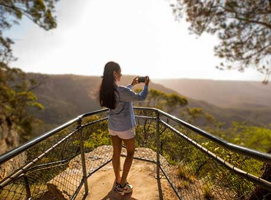
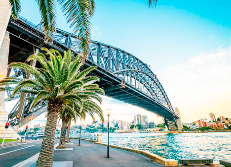

Bienvenido a Sídney

Bienvenidos a un lugar único
Sídney es una ciudad que está situada al sureste de Australia, a orillas de la amplia bahía de Sídney (Puerto Jackson).
Es catalogada como una de las 15 ciudades más visitadas del mundo, con millones de turistas viniendo cada año a ver atracciones culturales como el Jardín Botánico, el Puerto de la Ciudad, el Parque Nacional Real, y la Casa de la Ópera.
Turismo
Te invitamos a conocer los maravillosos destinos que te esperan en esta sorprendente ciudad. Surfeá en las mejores playas, salí de compras, y recorré los principales restaurantes de la ciudad.
